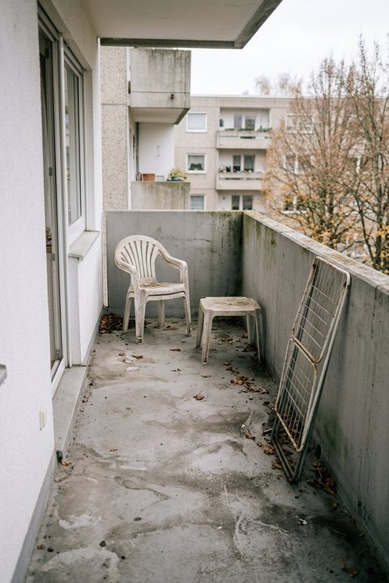
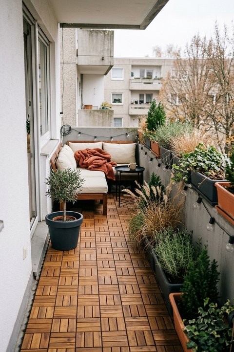

Grauer Betonbalkon vorher/nachher: von Grau zu Grün


Betonboden, Betonbrüstung, Betonwand: Viele Balkone in Wohnblocks sind komplett grau. Der Trick ist, so viel Beton wie möglich zu verdecken – unten mit Holz, an der Brüstung mit Pflanzen.
Zur Einkaufsliste & den Kosten ↓
Die 7 Schritte
1. Gründlich reinigen
Boden und Brüstung mit Schrubber und Wasser reinigen. Flecken von Blumentöpfen gehen mit etwas Essigwasser.
ca. 5–10 €
2. Holz-Klickfliesen
Der größte Unterschied: Der graue Boden verschwindet unter warmem Akazienholz. Vergleich mit anderen Böden: Balkonboden im Vergleich.
ca. 120–240 € (ca. 6 m²)
3. Pflanzkästen vor die Brüstung
Drei lange Kästen vor der Betonbrüstung mit Ziergräsern, Lavendel und kleinen Immergrünen verdecken den Beton fast vollständig.
ca. 85–170 €
4. Eine Loungebank
Eine Holzbank mit dicken cremefarbenen Auflagen und einer Decke in Terrakotta.
ca. 120–250 €
5. Beistelltisch
Ein kleiner runder Tisch für Getränke.
ca. 20–40 €
6. Ein Bäumchen im Kübel
Ein kleiner Olivenbaum gibt Höhe. Er verträgt nur leichten Frost – im Winter mit Vlies schützen oder hell und kühl ins Treppenhaus stellen. Winterharte Alternative: eine Kugelkonifere.
ca. 30–70 €
7. Lichterkette und Decke
Eine Lichterkette mit großen Birnen auf der Brüstung, dazu eine warme Decke.
ca. 35–65 €
Einkaufsliste
| Was | Menge | ca. Preis |
|---|---|---|
| Holz-Klickfliesen Akazie | ca. 6 m² | 120–240 € |
| Lange Pflanzkästen | 3 | 45–90 € |
| Gräser, Lavendel, Immergrüne | ca. 10 | 40–80 € |
| Loungebank + Auflagen | 1 | 120–250 € |
| Beistelltisch | 1 | 20–40 € |
| Olivenbaum im Kübel | 1 | 30–70 € |
| Lichterkette + Decke | 1+1 | 35–65 € |
Richtwerte für Deutschland, Stand November 2026. Die Preise schwanken je nach Händler und Saison.
Was kostet das Makeover?
Spar-Version – unter 300 €: Outdoor-Teppich statt Fliesen, zwei Pflanzkästen, gebrauchte Bank, Lichterkette.
Komplett wie auf dem Bild – ca. 415–845 €.
Tipp: Mit dem Boden anfangen – er verändert den Balkon am meisten.
Häufige Fragen
Darf ich Kästen auf die Betonbrüstung stellen?
Nur innen davor auf den Boden, nie lose oben auf die Brüstung – sie könnten herunterfallen.
Und auf einem kleineren Balkon?
Die Spar-Variante: Kleiner Balkon vorher/nachher.